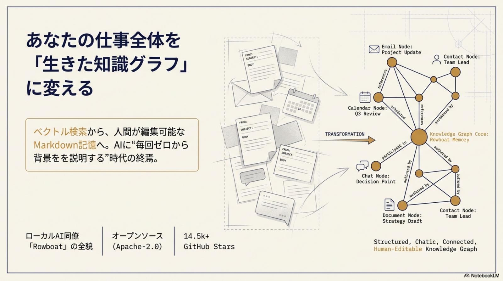
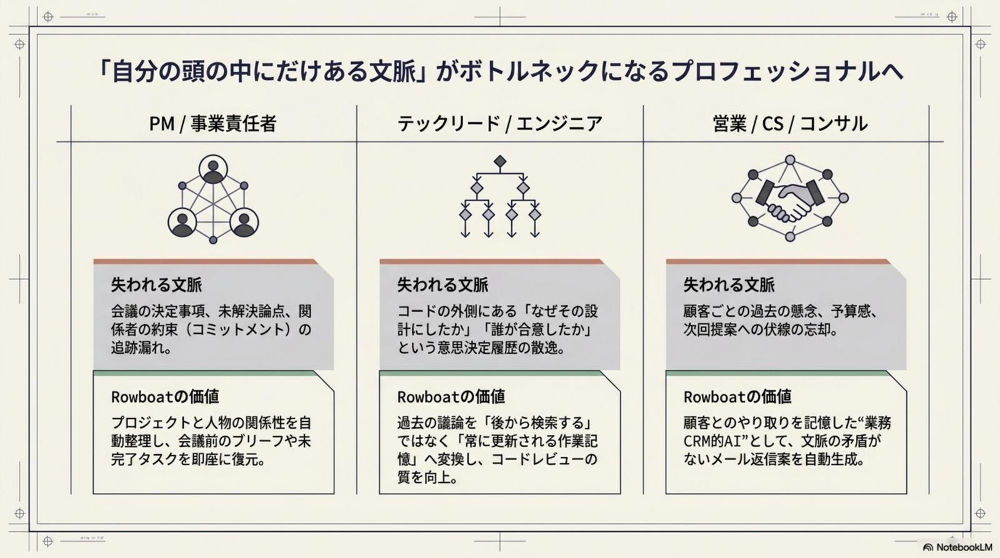
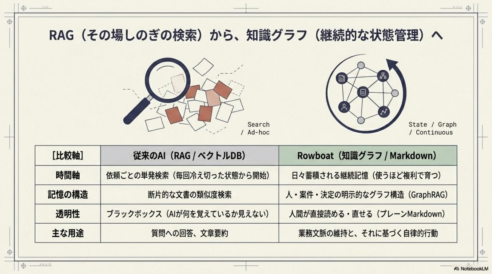
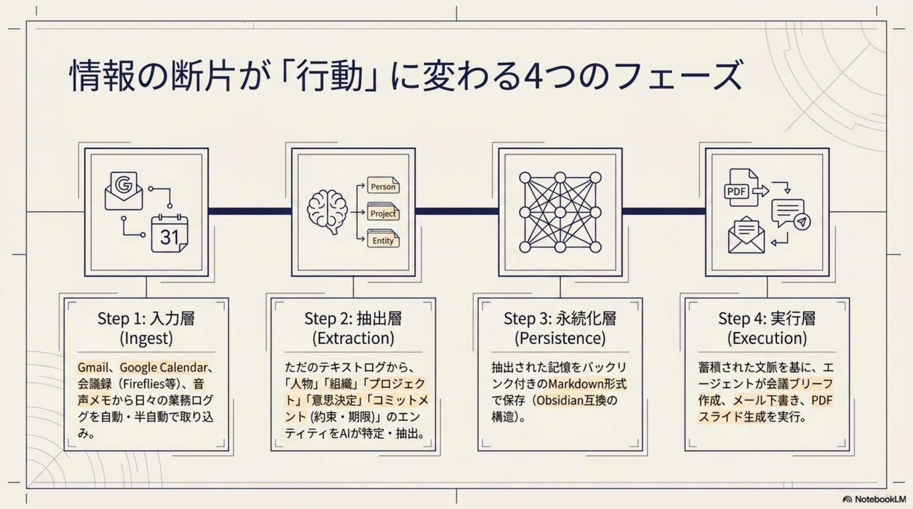
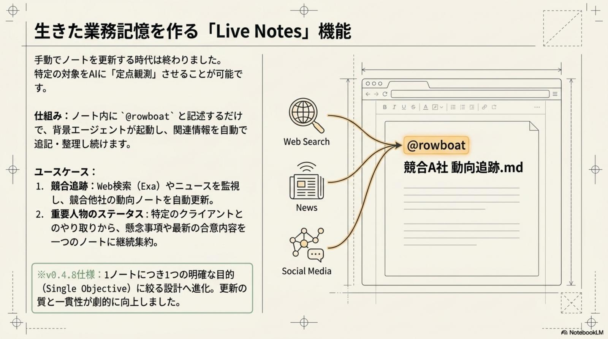
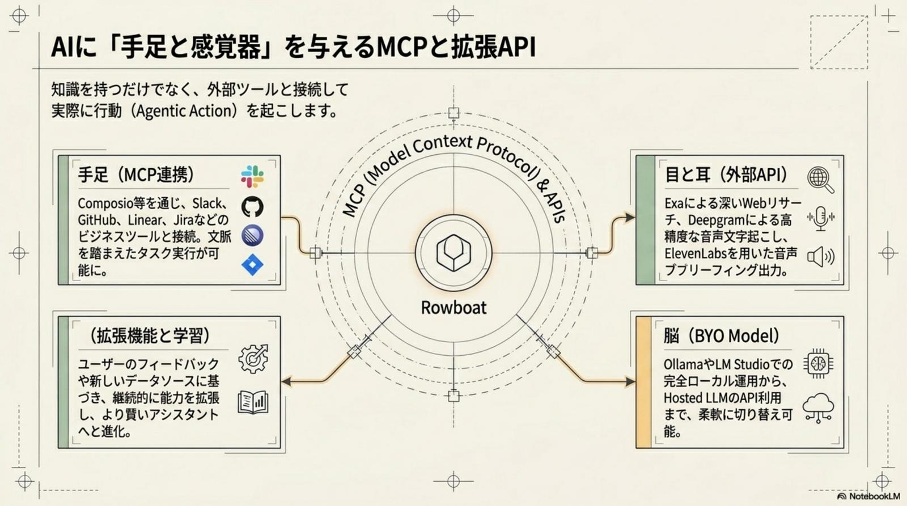
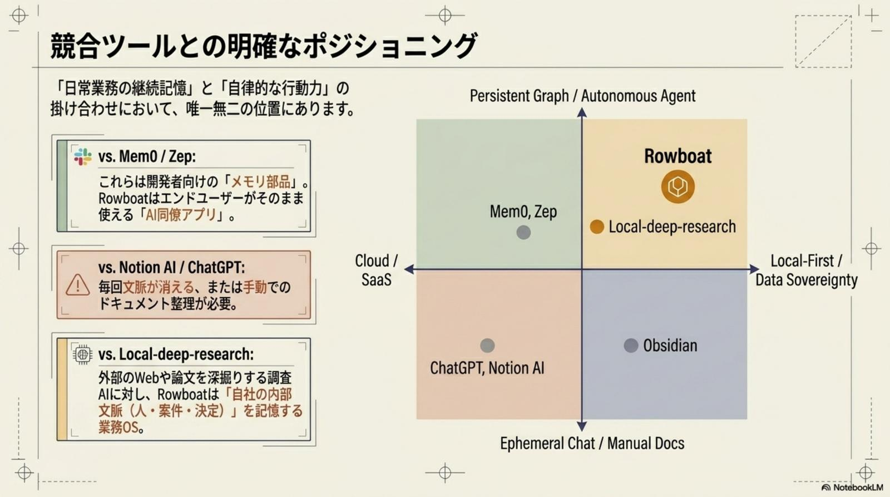
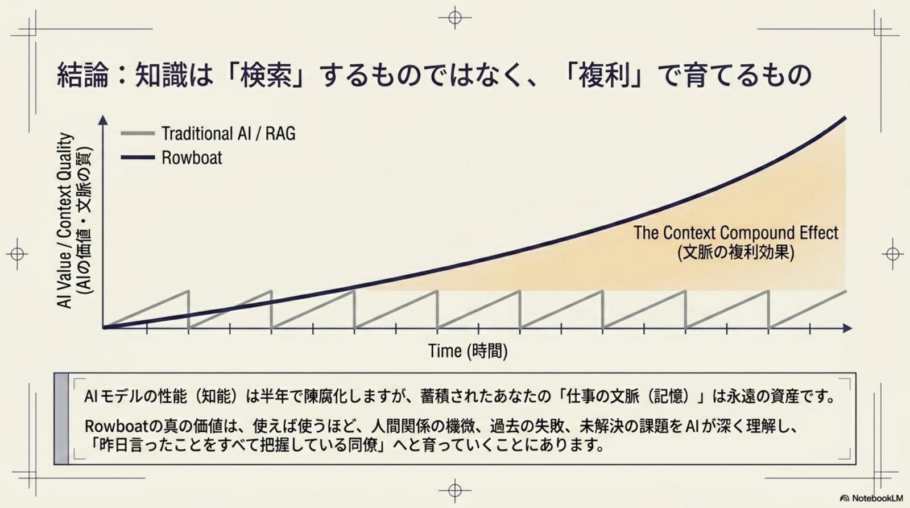
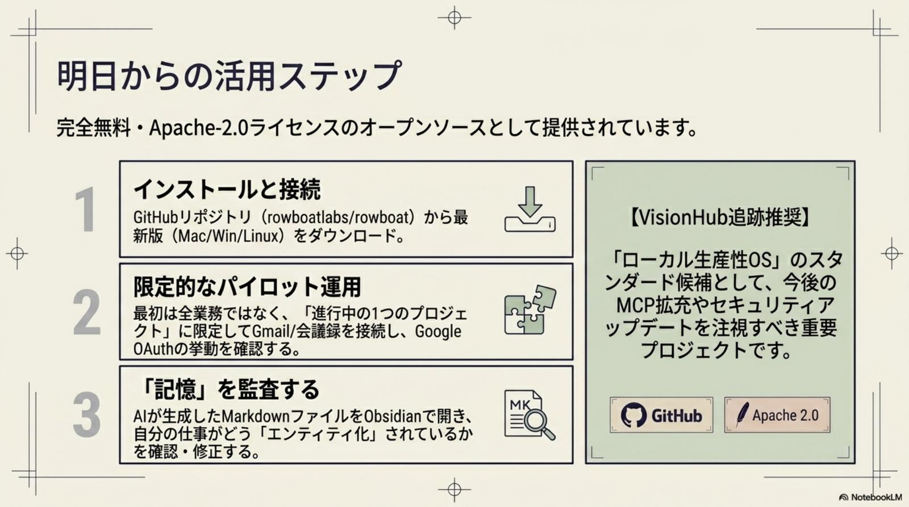
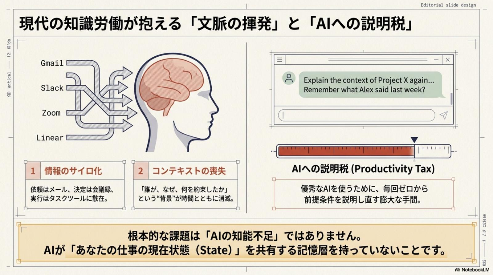

AI とのコールドスタート問題
セッションごとに記憶がリセットされるため、毎回「初対面」のように前提条件や背景を説明し直す必要がある。この説明コストが、AI 活用の ROI を著しく低下させる最大要因。
Rowboat · ローカル AI 同僚 / 業務メモリ OS · Issue № 05/27
LLM の進化で 「知能」はコモディティ化した。だが多くの AI ツールは、対話のたびに記憶がリセットされる「使い捨ての道具」に留まっている。オープンソース Rowboat は、単なる AI チャットの枠を超えた真の「AI 同僚（Coworker）」として、業務文脈を一生忘れない資産へ変える。
Rowboat の本質は「業務文脈を資産化するための個人業務メモリ層（OS）」だ。Gmail / カレンダー / 会議録 / ボイスメモといった断片的ログを、AI が理解・活用可能な「生きたナレッジグラフ」へ変換するローカルファースト OSS。中心思想は 「Knowledge compounds over time（知識は複利で増える）」 ——モデル（知能）は交換可能な借り物に過ぎないが、Rowboat に蓄積されるコンテキスト（業務背景）こそが、他者に代替できない「組織の防御壁（IP Moat）」となる。3 つの技術的柱（ローカル LLM × Markdown / Qdrant / MongoDB の 3 層ストレージ × MCP / Composio 連携）と 4 層運用アーキテクチャ（Ingest → Extraction → Persistence → Execution）で、AI を「単なる回答者」から「実務の実行者」へ進化させる。

これまでの AI はセッションごとに記憶がリセットされる「初対面の他人」だった。Rowboat は業務文脈を継続的に蓄積し、ユーザーの「阿吽の呼吸」を理解する同僚へと進化する。AI の真の生産性は「知能の高さ」ではなく、「文脈の所有」で決まる時代へ。

知識労働者が直面する最大の障壁は、情報の断片化による「業務文脈の揮発」。情報は存在していても、必要な瞬間に統合されていない。この非効率を Rowboat は4 つの「痛み」から構造的に解放する。
セッションごとに記憶がリセットされるため、毎回「初対面」のように前提条件や背景を説明し直す必要がある。この説明コストが、AI 活用の ROI を著しく低下させる最大要因。
メール、会議、カレンダー、タスク管理——情報は至る所に分散。背景が見えない状態での判断は、致命的なミスの原因となる。サイロ間の橋渡しを誰かが手で行う非効率が固定化。
機密性の高い意思決定プロセスをクラウド SaaS に預けることは、セキュリティリスクのみならず自社のコンテキストという「資産」の所有権を外部に委ねること。事実上の IP 流出。
一般的な AI の記憶（ベクトル DB のみ）は人間には読めない。AI が何を誤解しているかを人間が確認・修正できず、ハルシネーションのリスクを制御不能。

Rowboat は、膨大な文脈を扱い、高度な判断を迫られるプロフェッショナルに最大の ROI を提供する。PM / EM / 営業・CS / Obsidian ユーザーの 4 ペルソナそれぞれに対して、「記憶のボトルネック」を構造的に解消するアプローチを提示する。

Rowboat のアーキテクチャは、プライバシー保護と実務実行力を両立させるための 3 層構造。脳（ローカル LLM）× 記憶（3 層ハイブリッド・ストレージ）× 手足（MCP / 外部 API）で、機密を一滴も外に漏らさず実務まで自動化する。
各層はそれぞれが独立した責務を持ち、「ローカル完結」と「外部実行」の境界線を明示的に分離する。これにより、機密情報の流出リスクを最小化しつつ、外部 SaaS との接続でワークフロー実行能力を確保。セキュリティとパワーの二者択一を超える設計だ。


Rowboat によるデータ処理は4 ステップを経て価値へ変換される。Ingest → Extraction → Persistence → Execution の連鎖が、断片的ログを「組織の代替不可能な資産」へと昇華させる。
Gmail、Google カレンダー、会議ノート（Fireflies / Granola 等）、ボイスメモの自動取り込み。情報源を一元化することで、文脈収集の摩擦をゼロに近づける。
情報を「人物」「組織」「プロジェクト」「意思決定」「コミットメント（約束）」の単位に分解・構造化。ナレッジグラフのノードと辺が自動生成される。
抽出された情報をバックリンク付きの Markdown ファイルとして書き出し。Obsidian 互換のためそのまま閲覧・編集可能。「動く百科事典」として育つ。
蓄積されたグラフに基づき、会議ブリーフ・メール下書き・PDF スライド生成を実行。Live Notes @rowboat v0.4.8 以降は 1 ノート = 1 Single Objective で精度を担保。

Rowboat は、単発の検索（RAG）ではなく、「業務状態（State）の継続管理」に軸足を置いている。RAG 型 AI チャット / local-deep-research / Obsidian 単体との明確な差異を、5 軸で論理化する。

1 つのツールに統合せず、用途別に組み合わせるのが ROI 最大化の定石。日常の質問は RAG、深掘り調査は local-deep-research、思考整理は Obsidian、そして業務状態の継続管理は Rowboat——役割分担で各ツールの最大効率を引き出す。
CTO 視点から、組織導入で管理すべき 5 つのリスクと対策を提示する。Rowboat はローカルファースト設計ゆえに OS レベルの権限管理と OAuth 設定の厳密性が成否を分ける。運用前にチェックリスト化することが必須。
各リスクは OS / アプリ / 運用ルールの 3 層で管理する。1 層でも抜けると機密情報の漏洩や権限の不正取得につながりかねない。Day 1 から監査ログを残す運用を強く推奨。
http://localhost:8080/oauth/callback の正確な設定が必須。google-setup.md の厳守を推奨。
Rowboat の導入は、単なるツール追加ではなく個人の知的生産性を「複利」で成長させるためのインフラ構築。AI に毎回背景を説明する時代を終わらせ、データ主権を自らの手に取り戻す3 ステップの旅。
たとえ将来的に AI モデルが入れ替わっても、手元に残る「あなたの業務文脈」は代替不可能な資産として残り続ける。今こそ、自分だけの AI 同僚を育て始めよ。知識は複利で増え、3 ヶ月後には別次元の生産性に到達する。

立場ごとに最初の一歩は変わる。3 ヶ月続ければ、「阿吽の呼吸の AI 同僚」が手に入る。
会議（Fireflies / Granola）の議事録を Rowboat に Ingest し、意思決定履歴を案件単位でナレッジグラフ化。会議前ブリーフィング資料を自動生成し、「決定の背景を即座に復元」できる体制を構築する。
GitHub / Linear と連携し、「なぜその設計になったか」の議論を時系列保持。コードの外側にある設計判断・仕様変更・レビュー方針を継続記憶化し、新メンバーのオンボーディングを劇的に高速化する。
Gmail と Slack を連携し、人物・組織・案件の記憶を継続的に整理。顧客ごとの過去の約束・懸念・予算感を忘れず、「商談前に阿吽の呼吸で準備完了」の状態をルーチン化する。
業務ログからのエンティティ抽出とバックリンク作成を Rowboat が自動代行。既存の PKM が「自動更新される動的な業務基盤」へと進化し、手動運用の限界を超える。
モデル（知能）は交換可能な「借り物」に過ぎないが、Rowboat に蓄積されるコンテキスト（業務背景）こそが、他者に代替できない「組織の防御壁（IP Moat）」となる。— ローカル AI 同僚 Rowboat · 業務文脈を資産化する個人業務メモリ層 · 2026-05-27

Rowboat 以外の 2026-05-27 関連トピックを併せてピックアップ。